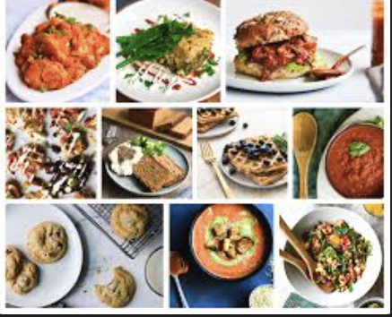

Welcome to Odin Recipes
Discover delicious homemade recipes that are simple, flavorful, and inspired by global cuisine. Explore easy guides and step-by-step instructions to make your cooking journey joyful.

Featured Recipes
"Cooking is like love. It should be entered into with abandon or not at all." – Harriet Van Horne
Get New Recipes Every Week
Sign up with your email to receive our latest recipes and cooking tips!